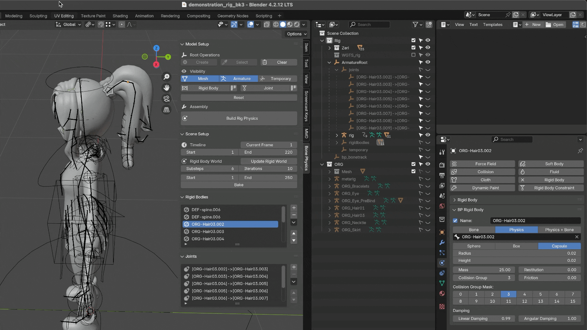
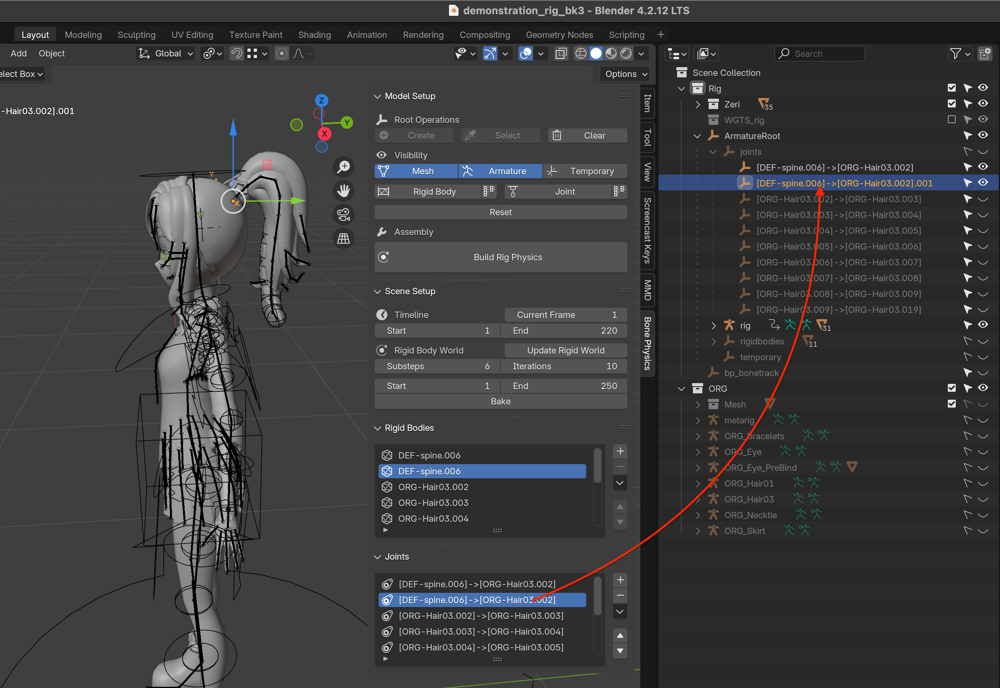
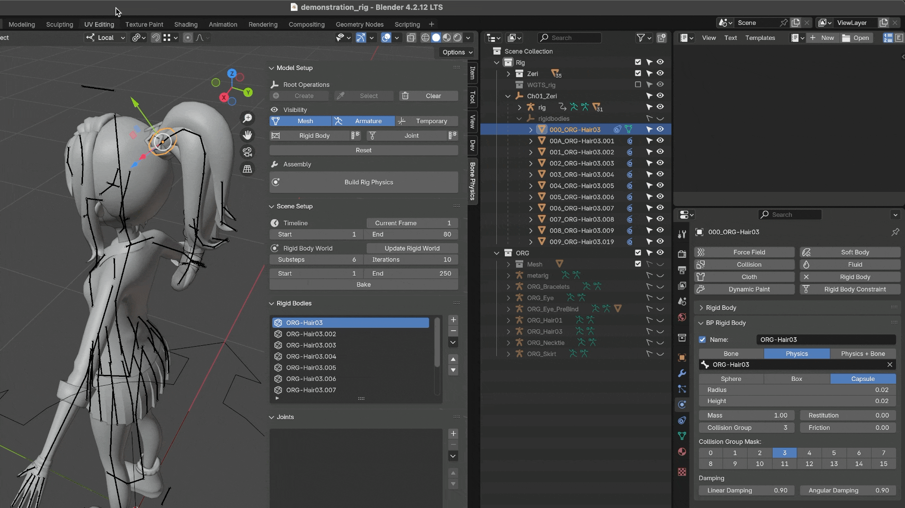
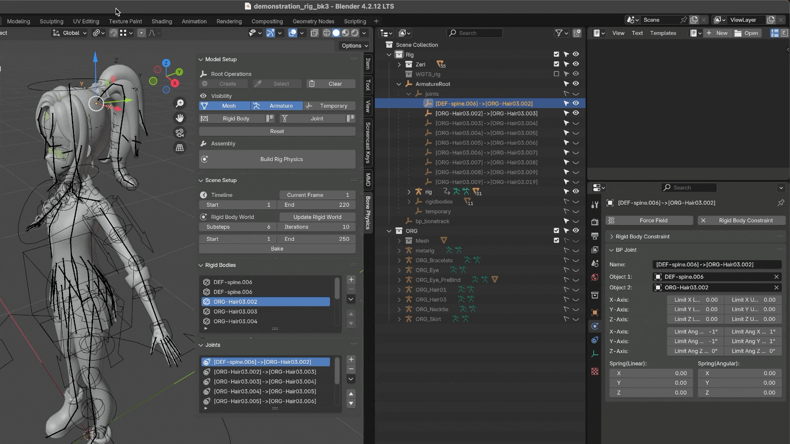
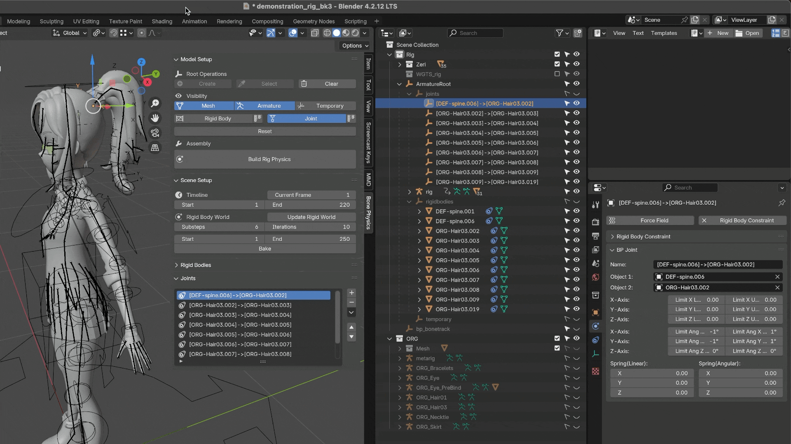
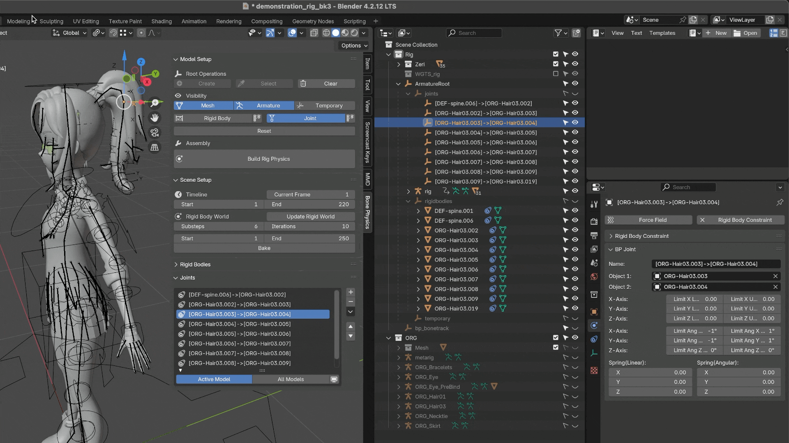
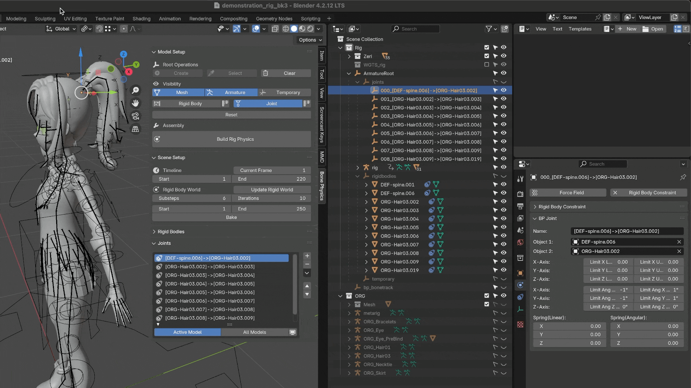
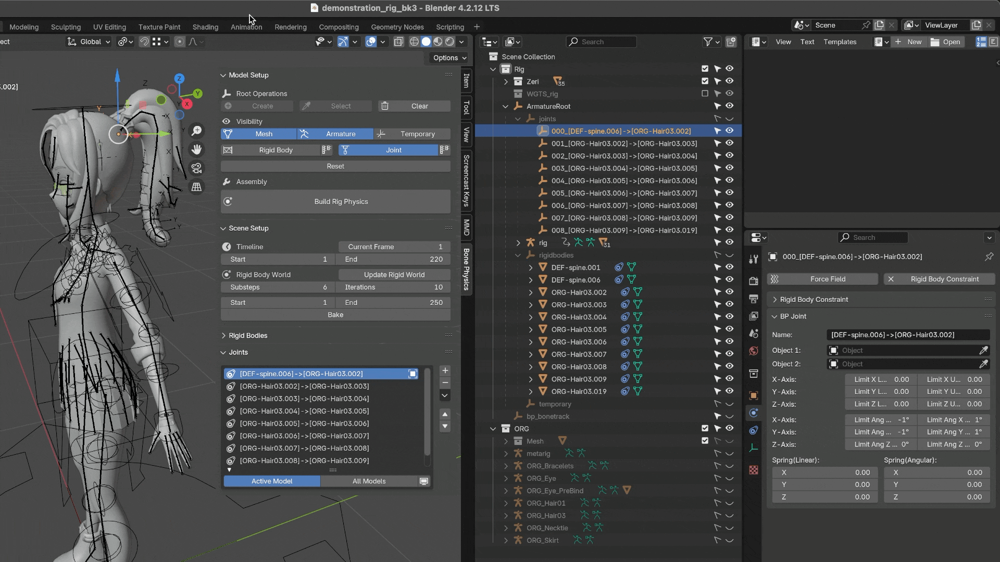
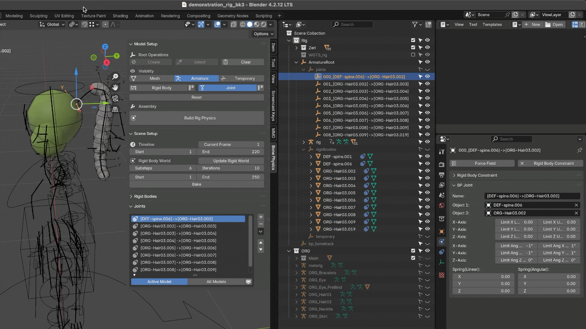

关节（约束）
添加关节
在两个刚体之间添加关节
切换到 对象模式。
选择需要添加约束的两个刚体。
点击 按钮。
配置关节属性，然后点击 确认。

备注
有关所有关节参数的详细说明，请参阅 关节属性。
Use Bone Rotation：启用后，关节的方向将与关联骨骼的方向保持一致。
禁用该选项时，关节将保持默认方向，而不会与骨骼方向对齐。
Is Lateral Joint：表示该关节连接的是来自不同骨骼链的两个刚体（例如相邻的裙子骨骼链）。
启用该选项后，插件会将关节放置在两个刚体之间的中点位置，并计算平均方向，以生成一个稳定的约束。
虽然在技术上可以在同一对刚体之间创建多个关节，但请谨慎使用。
如果你只需要一个关节，但却误创了多个重复关节，模拟结果可能会出现异常。
你可以在 关节列表 或 大纲视图（Outliner） 中检查是否存在重复关节。

沿骨骼链添加关节
切换到 对象模式。
选择同一骨骼链上所有需要添加约束的刚体。
点击 按钮。
配置关节属性，然后点击 确认。

警告
当同时选择骨骼链上的刚体（例如 A、B、C）以及不相关的刚体（例如 D、E）时，插件只会在骨骼链刚体（A、B、C）之间创建关节，其余对象（D、E）会被忽略。
备注
来自不同骨骼链的刚体必须逐对连接，目前不支持批量操作。
例如，在为裙子不同骨骼链之间的刚体添加关节时，需要逐个添加。
之所以存在这一限制，是因为每个模型的结构和设计都不相同。相比完全自动化，我们更优先保证系统的灵活性和兼容性。
保存预设
另请参阅：刚体保存预设
关节属性
Name：关节名称
Limit X Upper：沿 X 轴线性运动的上限
Limit Y Upper：沿 Y 轴线性运动的上限
Limit Z Upper：沿 Z 轴线性运动的上限
Limit X Lower：沿 X 轴线性运动的下限
Limit Y Lower：沿 Y 轴线性运动的下限
Limit Z Lower：沿 Z 轴线性运动的下限
Limit Ang X Upper：绕 X 轴的旋转上限（单位：度）
Limit Ang Y Upper：绕 Y 轴的旋转上限（单位：度）
Limit Ang Z Upper：绕 Z 轴的旋转上限（单位：度）
Limit Ang X Lower：绕 X 轴的旋转下限（单位：度）
Limit Ang Y Lower：绕 Y 轴的旋转下限（单位：度）
Limit Ang Z Lower：绕 Z 轴的旋转下限（单位：度）
Spring Linear：控制线性运动的弹簧刚度（值越大，关节位移时阻力越强）
Spring Angular：控制角向运动的弹簧刚度（值越大，关节旋转时扭矩阻力越强）
备注
上述参数对应 Blender 内置的 刚体约束 属性。
关节属性面板
关节属性面板 用于查看和编辑所有关节相关属性。
可以在 Blender 的 物理选项卡（Physics Tab） 下找到。

关节列表
关节列表 显示当前场景中所有的关节（ 刚体约束 ）。
默认情况下，按 过滤，仅显示当前选中模型的关节。
要查看所有模型的关节，请将过滤器更改为 。

列表项排序
可以使用 和 按钮重新排序列表项，或通过右侧下拉菜单选项 和 进行排序。

错误提示
关节缺失
当列表项没有有效的 刚体约束（Rigid Body Constraint） 数据时，会显示 “关节缺失” 图标。
这种情况通常发生在关节已从 Blender 的约束系统中删除，但仍存在于插件列表中。
要修复此问题，请在 关节属性面板 中使用 按钮重新创建关节。

关联对象缺失
当关节关联的一个或两个刚体缺失时，会显示 “关联对象缺失” 图标。
例如，如果 Object1 或 Object2 未被分配，关节将无法正常工作。
可以在 关节属性面板 中重新分配缺失对象。

小技巧
通常建议将 静态 或 骨骼驱动 刚体设置为 Object1，将 模拟 刚体设置为 Object2。
这种设置可确保约束行为更稳定且可预测，因为 Blender 内部将 Object1 视为关节位置和旋转限制的参考框架。
无效的关节对
当两个关联对象（Object1 和 Object2）指向同一个刚体对象时，会显示 “无效关节对” 图标。
此设置无效，因为一个关节需要两个不同的刚体。
请使用两个不同的 刚体 重新创建 关节 以解决此问题。

移除关节
在 3D视图、关节列表 或 大纲视图（Outliner） 中选择一个关节
点击 按钮将其移除。
另请参阅：移除刚体。